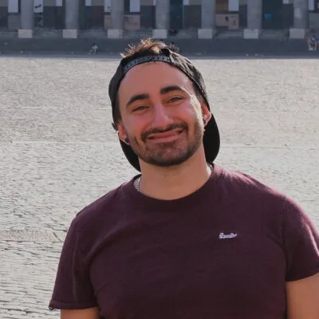

RoboSoft 2025 Best paper finalist
Tensegrity-based Robot Leg with Variable Stiffness
A robotic leg that brings tensegrity principles into the joint design to achieve variable stiffness.

PhD Student in Robot Learning
Laboratory of Intelligent Systems, EPFL
I am a doctoral researcher in the Laboratory of Intelligent Systems at EPFL, supervised by Prof. Dario Floreano. My research centres on tensegrity robots: lightweight, compliant machines in which rigid struts are held together by a web of cables.
My work ranges from designing novel tensegrity robots and understanding how they behave to exploring learning and adaptation mechanisms that control them.
Before EPFL, I studied Mechatronics at the University of Stuttgart and gained experience at the Max Planck Institute for Intelligent Systems, Fraunhofer IPA, Robert Bosch, and in Formula Student.
RoboSoft 2025 Best paper finalist
A robotic leg that brings tensegrity principles into the joint design to achieve variable stiffness.